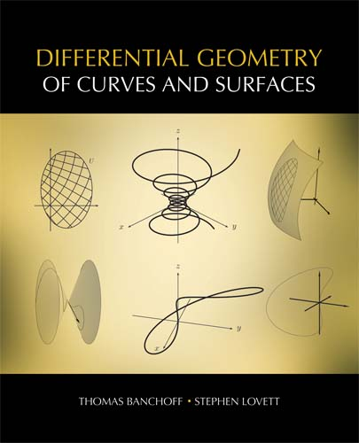

Differential Geometry of Curves and Surfaces
by Thomas Banchoff and Stephen Lovett

Demo Software
|
The computer graphics applets provided here illustrate many concepts and theorems introduced in the book Differential Geometry of Curves and Surfaces. Though one can explore the computer demos independently of the text, the two are intended as complementary modes of studying the same material. The graphical applets can provide motivation for certain definitions, allow the reader to explore examples further, and give a visual explanation for complicated theorems. See the tutorial for details about using the applets. Each demo also comes with some explanatory text. The applets are designed to be intuitive, so that after using just one or two (and reading the supporting text), any reader can quickly understand their functionality. However, the applets are extensible in that they are designed with considerable flexibility so that the reader can often change whether certain elements are displayed or not. Often, there are additional elements that one can display either by accessing the Controls menu on the control window or the Plot → Add Plot menu on any display window. |
| Chapter 1 | Plane Curves: Local Properties |
| Chapter 2 | Plane Curves: Global Properties |
| Chapter 3 | Curves in Space: Local Properties |
| Chapter 4 | Curves in Space: Global Properties |
| Chapter 5 | Regular Surfaces |
| Chapter 6 | The First and Second Fundamental Forms |
| Chapter 7 | The Fundamental Equations of Surfaces |
| Chapter 8 | Curves on Surfaces |
A K Peters, Ltd.
Comments or questions? Contact us.